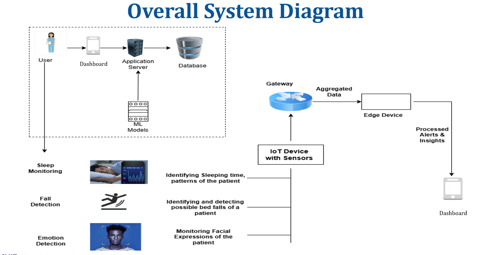

1. Literature Review
An ageing world has intensified the need for dependable elder-care technologies. Global projections show a sharp rise in the population over 65 years, which strains caregiver capacity and motivates continuous, unobtrusive monitoring in institutional settings. This has driven interest in IoT-based systems that can observe daily safety and health signals and deliver timely alerts to staff.
Early work in elder safety focused on fall detection using accelerometers and gyroscopes. Surveys report recurring trade-offs between sensitivity, false alarms, and response time, and recommend designs that preserve speed while limiting nuisance alerts. These findings underpin current practice where model choice and thresholding are tuned for real-time performance in homes and nursing facilities.
Sleep monitoring is a second pillar. Studies combine physiological and environmental signals to infer sleep stages and flag anomalies such as obstructive sleep apnea. The literature highlights non-intrusive sensing and simple feature sets to keep deployments practical in shared care environments. These approaches aim to provide nightly insight, guide basic interventions, and reduce undetected risk in older adults.
Emotion and affect recognition has emerged as a complementary stream, particularly for dementia care where verbal communication may be limited. Recent work integrates camera-based analysis with biosignals to recognize pain and distress, offering objective cues to caregivers and supporting faster, more appropriate responses. Reviews emphasize contactless methods and careful model selection for low-latency inference on resource-constrained devices.
Across these domains, architecture matters. Edge-cloud hybrids are frequently recommended to minimize latency, protect privacy, and scale across many rooms or wards. Local inference filters noise and triggers alerts, while server-side components manage longitudinal records and dashboards. This division of labor improves responsiveness and reduces bandwidth while keeping data available for trend analysis.
Recent project-level syntheses argue for unifying capabilities. Rather than deploying separate devices for falls, sleep, and emotion, integrated IoT frameworks can process multimodal inputs on a single platform and present cohesive status to staff. Such integrations aim to reduce cost and complexity, improve adoption, and support caregiver workflow in real settings.
Sleep Quality Tracking
Sleep is a critical component of overall health, yet it is often neglected elderly health quality checks. Our system's sleep quality tracking module focuses on monitoring and improving sleep patterns among elders.
This module tracks:
- Sleep duration
- Sleep stages (light, deep, REM)
Using wearable sensors that measure body temperature, heart rate, and blood oxygen, the system classifies sleep stages in real time with machine-learning models running on the Raspberry Pi. Caregivers gain insights into sleep patterns and receive alerts for abnormal conditions, enabling proactive health support and improved well-being for elders.
Emotion Detection
The emotion detection module supports dementia care by identifying subtle facial expressions such as pain, discomfort, or calmness that patients may not verbalize. Using MobileNetV2 trained on the FER-2013 dataset, the model classifies seven emotions—happy, sad, angry, fear, disgust, surprise, and neutral.
When distress is detected, alerts are instantly sent to caregivers through the React-based dashboard, allowing timely and informed responses. Achieving 90% accuracy with an average inference time of 1.5 seconds, the system improves empathy, comfort, and safety in elderly care environments.
Fall Detection
Falls are a significant risk for the elderly, often leading to severe injuries. Our fall detection module uses a combination of motion sensors and computer vision to identify when a fall occurs.
Upon detection, the system immediately alerts caregivers and provides real-time video feeds to assess the situation. This rapid response capability is crucial for minimizing the impact of falls and ensuring timely medical assistance.
Network Optimization
The network optimization module ensures smooth and reliable communication between wearable devices, the Raspberry Pi edge gateway, and the cloud dashboard. It intelligently manages data flow to maintain real-time performance even under unstable network conditions.
- Edge computing to process predictions locally, reducing cloud load
- Data compression techniques to minimize bandwidth usage
- Scalable multi-patient support through asynchronous pipelines
By optimizing traffic and prioritizing critical medical signals, the system ensures continuous, low-latency monitoring — safeguarding patient safety and maintaining reliable real-time updates.
2. Research Problem
The growing elderly population has placed increasing pressure on nursing homes, where limited caregivers must monitor multiple residents simultaneously. Traditional manual observation methods are inefficient and prone to delays in detecting critical conditions such as falls, sleep disorders, or emotional distress. Existing systems often address these issues separately, leading to fragmentation, higher costs, and data inconsistency.
Therefore, the research problem focuses on developing an integrated IoT-based nursing home system that can continuously monitor elderly residents’ health conditions—detecting falls, analyzing sleep quality, and recognizing emotions—while ensuring real-time alerts, scalability, and non-intrusive operation to enhance safety, independence, and quality of life in elderly care environments.
3. Objectives
3.1 Main Objective
- To design and implement a non-intrusive, IoT-based nursing home system that integrates fall detection, sleep quality analysis, emotion recognition, and network optimization to provide real-time health monitoring, predictive alerts, and improved caregiver response in elderly care environments.
3.2 Sub Objectives
Fall Detection
This component focuses on detecting falls among elderly residents using a combination of motion sensors and video analysis to ensure timely alerts and responses from caregivers.
Monitor and Analyze Sleep Quality
Sleep is crucial for overall health, especially for the elderly. This objective aims to monitor sleep patterns and provide insights into sleep quality, helping caregivers address potential issues.
Emotion Detection
This component focuses on recognizing and interpreting the emotional states of elderly residents using facial expression analysis, enabling more empathetic and responsive caregiving.
Network Optimization
Poor network conditions can hinder the performance of IoT devices. This objective aims to implement strategies for optimizing network traffic and ensuring reliable communication between devices.
4. Methodology
The proposed IoT-Based Nursing Home System for Elderly Health Monitoring and Predictive Alerts follows a layered methodology that integrates hardware, software, and AI-driven analytics to ensure continuous, real-time health monitoring within a nursing home environment.
The system was developed using a React.js frontend and a Flask (Python) backend to enable seamless real-time monitoring within nursing homes. The Raspberry Pi serves as the central IoT device, collecting data from sensors such as the camera, accelerometer, gyroscope, and temperature module.
Machine learning models were trained for specific functions: MobileNetV2 for emotion detection, CNN–LSTM for fall detection, and a Dense Neural Network for sleep quality analysis. These models analyze sensor inputs and classify states such as distress, falls, or poor sleep conditions.
Sensor readings are sent to the backend through RESTful APIs, processed, and stored in MongoDB for historical tracking. The dashboard, built in React, displays real-time alerts, visual charts, and summary reports to assist caregivers in decision-making.
The system operates continuously, issuing instant alerts when abnormal conditions are detected. Each module runs independently, ensuring scalability, low latency, and reliability for continuous elderly health monitoring.
5. Research Gap
Current elderly monitoring systems often focus on single aspects of health, such as fall detection or sleep tracking, rather than providing a unified approach. This fragmentation results in data inconsistency, higher maintenance costs, and delayed caregiver responses. Many existing solutions also rely on wearable devices, which can be uncomfortable or impractical for elderly patients, especially those with dementia.
Furthermore, while emotion recognition technologies have advanced, few studies apply them in non-verbal dementia care, where detecting micro-expressions can greatly improve caregiver awareness. Similarly, network reliability and real-time alert delivery remain underexplored in multi-device IoT environments like nursing homes, where uninterrupted data flow is critical.
Therefore, there is a clear research gap in developing a comprehensive, non-intrusive IoT-based system that integrates fall detection, sleep monitoring, and emotion recognition under a single optimized network framework to ensure continuous, accurate, and scalable elderly care.